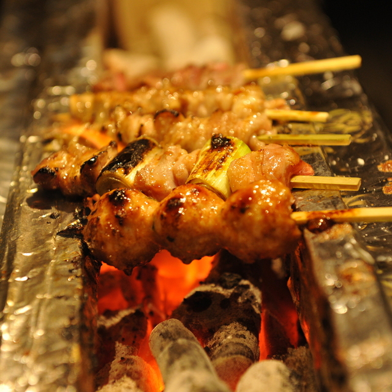
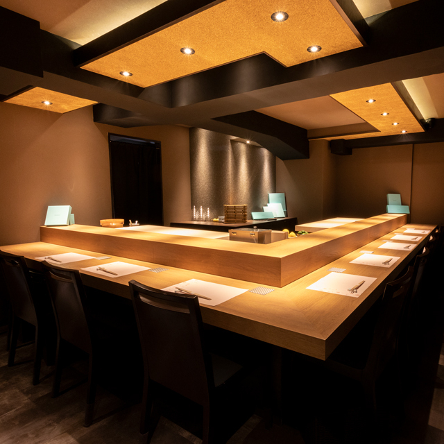
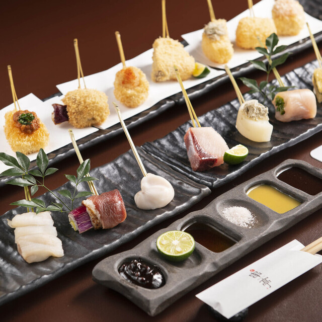
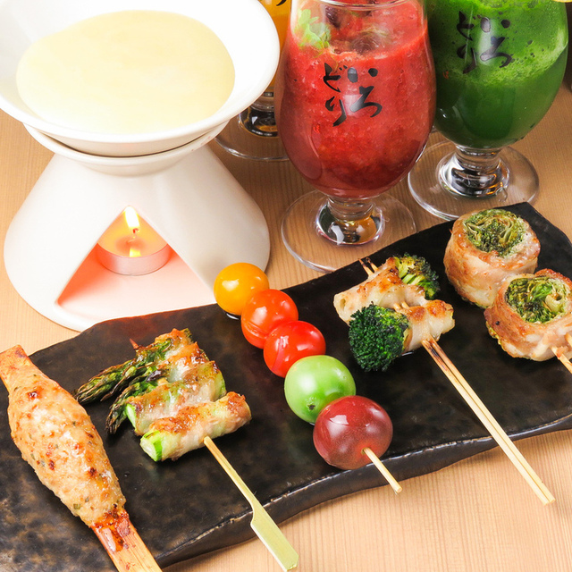
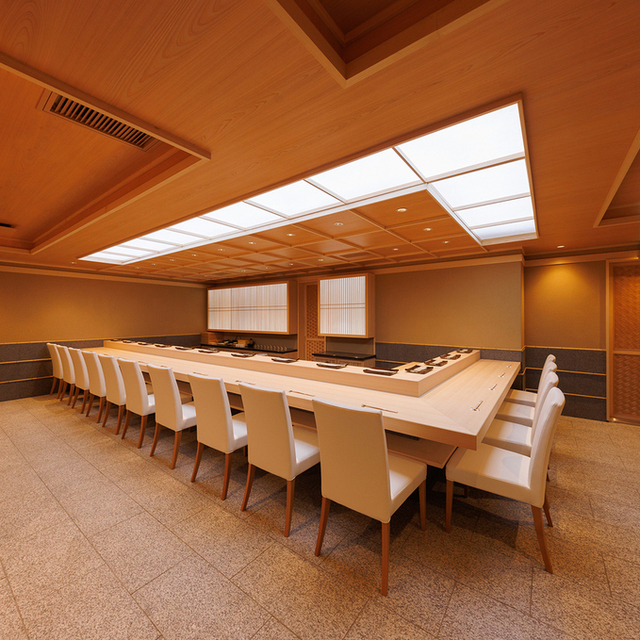
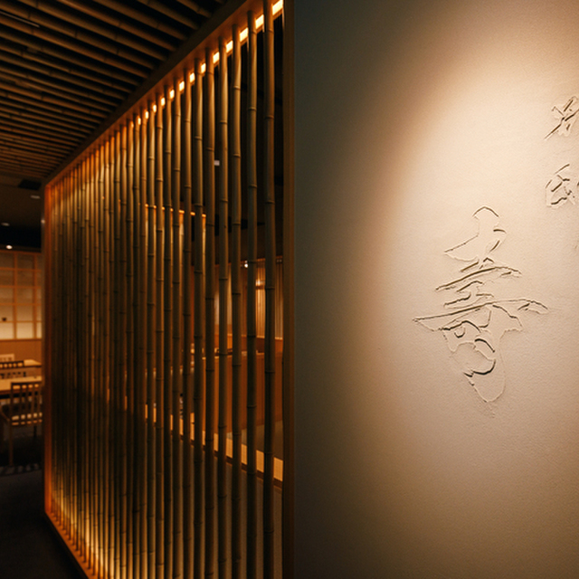

市原家 飲み会 11月と12月
北坂戸からも錦糸町からも来やすい池袋で、4人で入れる個室がある店を選びました。どれも駅から歩いて5分以内です。
北坂戸から池袋。東上線の急行で乗り換えなし。
錦糸町から池袋。乗り換え1回。
池袋から北坂戸への終電。池袋が始発なので座って帰れます。
ほかの街と比べると、北坂戸から新宿三丁目は55分（乗り換えなし）、有楽町や上野は1時間14分（乗り換え1回）でした。
Yahoo!乗換案内で、11月14日（土）17時に出る場合を調べた時間です。
気になる店があったら、番号を家族のLINEに書いてください。






11月と12月の空いている夜から、4人がそろう日を探しています。
日程のページを開く